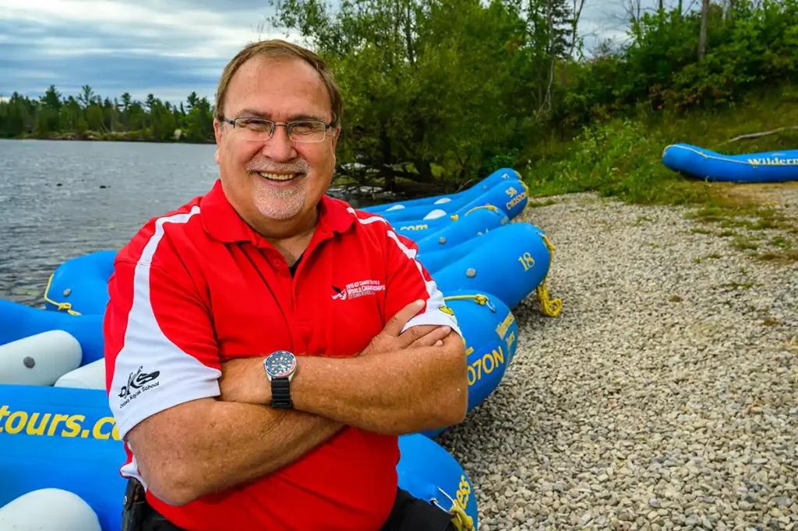

Purpose: Deliver unforgettable rafting adventures while respecting nature. Mission: Provide safe, thrilling, and eco-friendly rafting experiences. Creed: Adventure, safety, and sustainability guide our journey. Motto:Paddle hard, explore more!


Purpose: Deliver unforgettable rafting adventures while respecting nature. Mission: Provide safe, thrilling, and eco-friendly rafting experiences. Creed: Adventure, safety, and sustainability guide our journey. Motto:Paddle hard, explore more!
Founded in 2005 by passionate river guides, WWR started with one raft and a dream—to share the thrill of white-water adventure. Today, we’re a top rafting company, offering safe, eco-friendly, and unforgettable river experiences.
We are committed to sustainability and have expanded to several rivers, providing incredible experiences to adventure seekers all over the world. Our story continues to unfold, and we look forward to many more thrilling expeditions.

Pachuca River

Utah River

Campeche River

Sonora River

Chiapas River